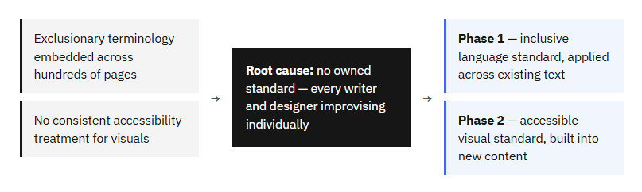
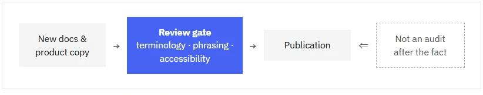
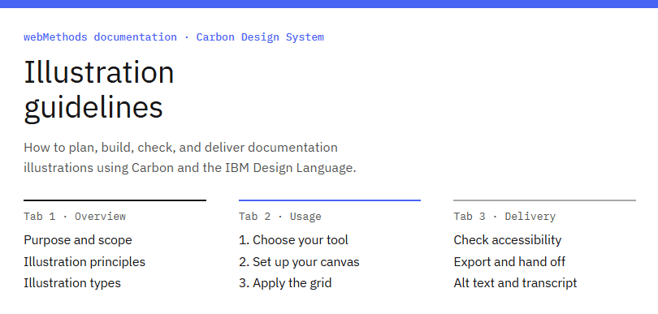
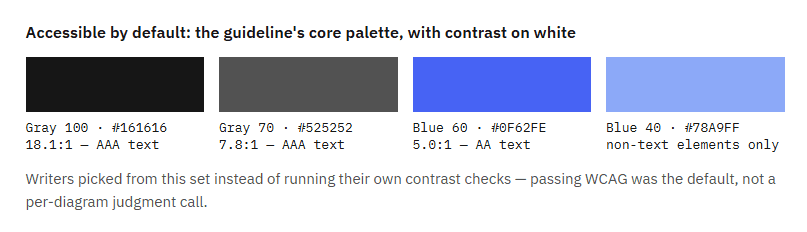

Building an accessibility and inclusive content system for webMethods documentation
- ROLE
- Content systems and accessibility
- compANY
- Software AG (webMethods documentation), continued through IBM merger
- SCOPE
- Documentation and product copy across the webMethods suite
- year
- 4 months
The problem
Years of technical documentation for webMethods had accumulated two invisible but serious problems, and nobody owned either one.
Language carried outdated, exclusionary terminology. Long-standing technical conventions like master - slave to describe primary - replica system relationships, and default use of gendered pronouns (he or she, him or her) in instructional copy, were embedded across hundreds of pages. They were baked into templates, style precedent, and years of writer habit.
Visuals were not accessible. Diagrams, icons, and screenshots across the documentation had missing or unhelpful alt text, inconsistent color and icon treatments, and no ARIA labeling conventions that writers or designers could follow consistently. Every writer solved this differently, if they solved it at all, which meant screen reader users and low-vision users hit a different, unpredictable experience depending on which doc they landed on.
Both problems shared a root cause: there was no owned standard. Writers and designers were improvising accessibility and inclusivity decisions individually, which meant a fix would not hold even if any one person cleaned up any one page.
I addressed this in two connected phases: inclusive content first, then accessible visuals/illustrations. Language conventions could be corrected immediately across existing text, while visual standards needed to be built into how new diagrams, icons, and screenshots are going to be created going forward.

Phase 1: accessible and inclusive content
My Role: authoring the standard
Most inclusive-language fixes in documentation are reactive. A writer notices a problem term on their own page and fixes it locally. I took a different approach: I authored the writing guidelines for the webMeth0ds suite documentation, giving writers a working reference for retiring outdated terminology and defaulting to inclusive phrasing in both documentation and product copy. Not a one-time cleanup, but the standard new content was written against.
Before > After: terminology swaps
A sample of the terminology decisions codified in the guidelines, organized by category so future writers could apply the same logic to terms not explicitly listed.
These were not isolated edits. They were entries in a living reference document, each with a short rationale, so future writers understood why the change existed and could extend the same reasoning to terms not On the list.
The review process: making it stick
A guideline that lives in a document nobody checks against erodes within a quarter. Alongside the standards themselves, I set up a review process for content and graphics: a gate new documentation and product copy passed through before publication, not an audit after the fact.
Setting this up meant working directly with developers, leadership, designers, and support teams to understand real implementation constraints and make sure the language and content structures I was suggesting could realistically be maintained, not just written on paper.

Outcome
The inclusive language guidelines became the standard reference that writers and designers continued to use for terminology decisions across the webMethods documentation, including through the transition into IBM's documentation environment post-merger, where the same principles carried forward into broader restructuring work.
Phase 2: accessible visuals
The Final Result: Illustration Guidelines on Carbon
Once the language standard was in place, the second gap was visual: diagrams, icons, and screenshots across the documentation had no consistent accessibility treatment. I authored the graphic guidelines for webMethods documentation, giving technical writers and content designers concrete, repeatable direction on:
• Writing alt text that describes function and context, not just literal visual content
• Correctly scoping and writing ARIA labels for interactive documentation elements
• Choosing colors and icon treatments that met accessible contrast standards by default, rather than leaving contrast checks to individual judgment
• Adding transcripts for non-text and narrative content, including the transcript and accompanying intent documentation built for the comic-strip explainer created for the API Control Plane product, so the same concept was accessible to screen reader users as it was to sighted users
The Phase 2 standard shipped as the 'Illustration guidelines' for the webMethods documentation is built on the Carbon Design System and the IBM Design Language. This phase is a working reference covering how to plan, build, check, and deliver documentation illustrations. The excerpts below reproduce its actual visual system: IBM Plex type, the Carbon blue accent, the layout grid, and a palette that passes contrast checks by default.


Before > After: visual accessibility practice
The review process: making it stick
The same design review process covered graphics, not just copy. New visuals were checked against the accessibility standard (alt text quality, ARIA labeling, color and contrast, and text equivalents where needed) before publication. This meant accessibility in visuals was not a retrofit step. It was part Of how a diagram or screenshot got approved for the documentation in the first place.
As with the Content guidelines, building this out required working with developers, leadership, designers, and support teams to confirm what was technically implementable in the documentation platform, so the visual standards held up in practice, not just in theory.
Outcome
The graphic and accessibility guidelines became the standard reference for how writers and designers across the documentation org treated visuals going forward. The same durability outcome as the content guidelines, extended to cover diagrams, icons, screenshots, and non-text content like the comic- strip explainer.
Why two phases, one system
Phase 1 and Phase 2 were sequential in practice but built as one connected system. Inclusive language made the words in the documentation accessible and respectful. The graphic guidelines made the visuals accessible to the same standard. Together, they moved accessibility and inclusion from something individual writers decided on their own, page by page, to something the documentation system defaulted to, for every writer and designer who touched it after.
Note: Terminology and visual accessibility examples above reflect actual language and process decisions made as part of this work. Specific screenshots and diagram assets are described at the process level or recreated/generalised for portfolio purposes where original assets are not available due to company access restrictions.